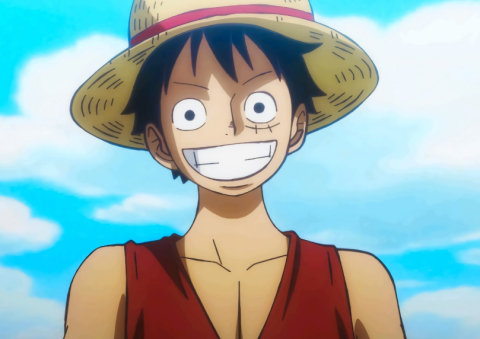
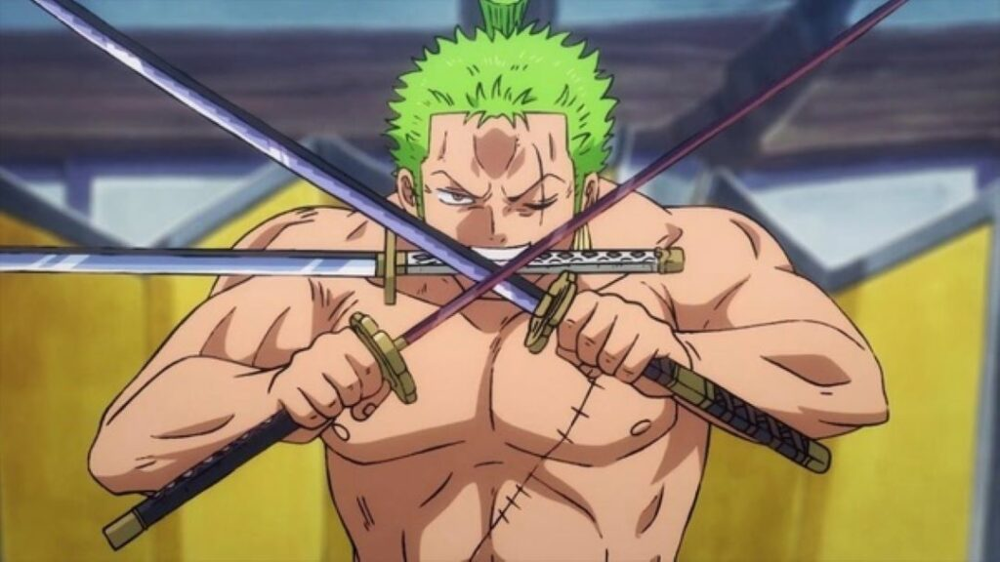

Karakter One Piece
Monkey D. Luffy
Monkey D. Luffy adalah tokoh utama dari serial anime dan manga *One Piece*. Ia adalah kapten bajak laut Topi Jerami, dikenal dengan sifatnya yang ceria, optimistis, dan pantang menyerah. Luffy memiliki kemampuan buah iblis Gomu Gomu no Mi yang memberinya kekuatan tubuh elastis seperti karet. Impiannya adalah menemukan harta karun legendaris One Piece dan menjadi Raja Bajak Laut. Walau terlihat sederhana dan sering kali bertindak tanpa berpikir panjang, Luffy memiliki rasa keadilan yang kuat dan selalu berjuang untuk melindungi teman-temannya. Karakternya sering kali memberikan inspirasi karena tekadnya yang tak tergoyahkan dan kemampuannya mengatasi rintangan berat dengan semangat.
Nami
Nami adalah salah satu anggota utama dalam kelompok bajak laut Topi Jerami di serial *One Piece*. Ia dikenal sebagai navigator yang ulung dan sangat terampil dalam membaca cuaca serta membuat peta. Nami memiliki kepribadian yang cerdas, pragmatis, dan kadang-kadang manipulatif, terutama ketika berurusan dengan uang atau situasi yang menguntungkan. Ia awalnya bergabung dengan kelompok ini untuk memenuhi impiannya membuat peta dunia yang lengkap. Nami juga memiliki latar belakang yang tragis, karena ia dulunya diperbudak oleh kelompok bajak laut Arlong, yang membunuh ibunya. Ketika Luffy dan kru Topi Jerami membantu membebaskan desanya dari Arlong, Nami akhirnya bergabung secara resmi dengan mereka. Ia dikenal dengan senyumnya yang ceria, namun juga memiliki sisi kuat yang berjuang untuk melindungi orang-orang yang dicintainya. Selain kemampuan navigasi, Nami juga mahir menggunakan tongkat cuaca yang dikenal sebagai "Climatact," yang memungkinkannya untuk mengendalikan elemen cuaca dalam pertarungan.
Zoro
Roronoa Zoro adalah salah satu anggota utama dalam kelompok bajak laut Topi Jerami di *One Piece* dan dikenal sebagai ahli pedang terhebat. Ia memiliki impian untuk menjadi swordsman terkuat di dunia dan mewarisi gelar dari mentor dan sahabatnya, Dracule Mihawk. Zoro dikenal dengan ketekunan, disiplin, dan keberaniannya, serta memiliki tekad yang kuat untuk mencapai tujuannya. Ia menggunakan teknik bertarung yang unik dengan tiga pedang (Santoryu), yang memungkinkannya menyerang dengan kekuatan dan kecepatan luar biasa. Selain keahliannya dalam bertarung, Zoro juga memiliki sifat yang setia kepada teman-temannya dan akan melakukan apa saja untuk melindungi mereka. Meskipun sering terlihat serius dan kaku, Zoro memiliki sisi humor yang muncul dalam interaksinya dengan anggota kru lainnya, terutama saat berhadapan dengan Luffy dan Sanji. Ia juga dikenal dengan kebiasaannya yang suka tidur dan sering tersesat, meskipun ia merupakan petarung yang sangat handal di medan perang.